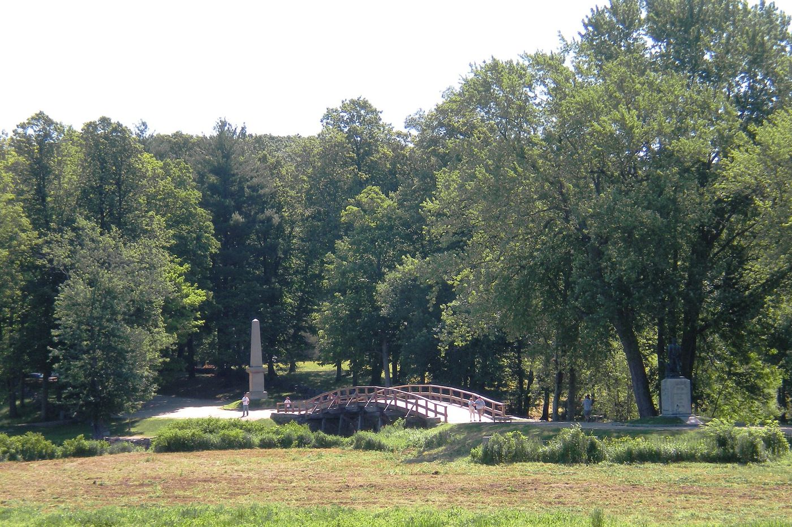
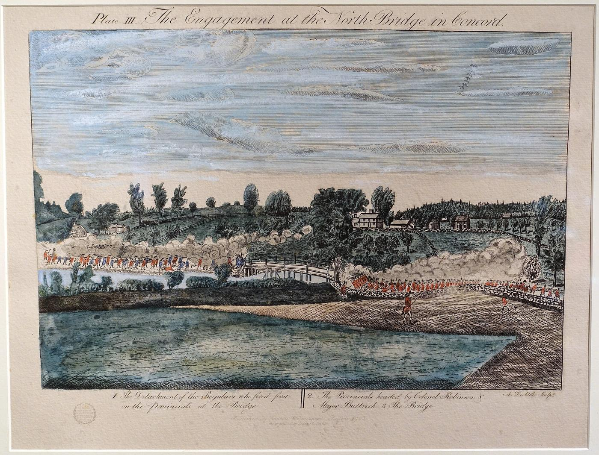
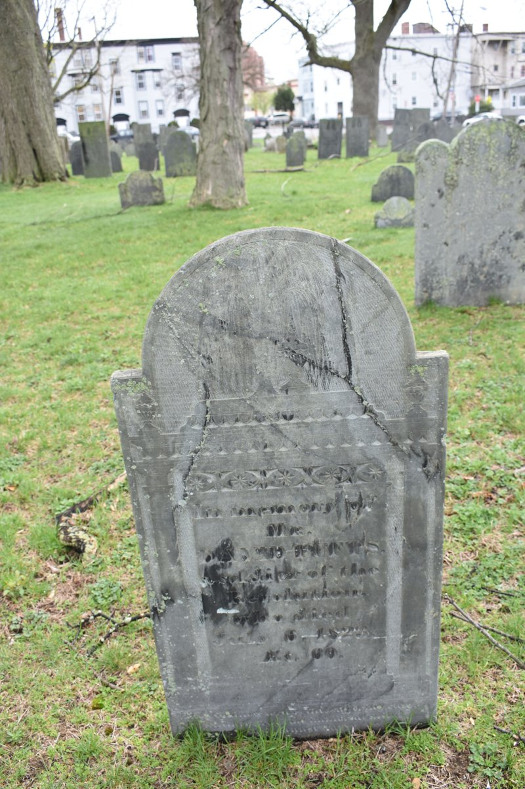

Biography
David Tufts was at Concord on the first day of the war, aged eleven by the dates given. He later served in the Continental Army as a corporal and became Lynn’s first express driver.
Service Record
Town: Medford; Billerica; Lynn · Dates: 1763 – 1823
Born 17 June 1763 in Medford; died 6 July 1823 in Lynn; trader, expressman, and hotel keeper. (Tufts Kinsmen, Vol. I, p. 162, family no. 41-7)
In the Battle of Concord on the first day of the Revolution; later guarded the Convention troops; joined the Continental Army at Claverack, N.Y., 1779; enlisted again at Billerica in 1781 for three years in the 2nd Massachusetts Regiment, rising from private to corporal; applied for a pension 7 Apr. 1818 at Lynn. (Tufts Kinsmen, Vol. I, p. 162, family no. 41-7)
First express driver in Lynn; kept a hotel in Market Square. (Tufts Kinsmen, Vol. I, p. 162, family no. 41-7)
Family Connection
Family number 41-7 in Tufts Kinsmen, Vol. I. Parents are not named in the extract seen.
Relatives with profiles on this site: father Lieut. William Tufts (1713–1783); brother William Jr. (1736–1782; mother Catherine Wyman) ; brother George (1747–1796; mother Catherine Wyman)
; brother George (1747–1796; mother Catherine Wyman) ; brother Grimes (1748–1808; mother Catherine Wyman)
; brother Grimes (1748–1808; mother Catherine Wyman) ; brother Samuel 2nd (1752–1815; mother Mary Francis)
; brother Samuel 2nd (1752–1815; mother Mary Francis) ; brother Moses (possible; Brooks no. 266a)
; brother Moses (possible; Brooks no. 266a) ; sister Lucy Tufts Pritchard; brother Richard Tufts. Brothers are listed with their mothers as Brooks gives them (p. 550); sons of different mothers are half-brothers.
; sister Lucy Tufts Pritchard; brother Richard Tufts. Brothers are listed with their mothers as Brooks gives them (p. 550); sons of different mothers are half-brothers.
Spouse(s)
Not found in the sources checked (Brooks 1855 Register of Families; Wild; Find a Grave data on file; Tufts Kinsmen Vol. I extract).
Authoritative IDs / Index Numbers
| Source | ID / status |
|---|---|
| Perseus person index (auth=) | Checked, not found (no auth=tufts,… key for this name in Brooks, the Medford Historical Register or Historic Leaves). |
| Find a Grave memorial | 58254535 (dates and family checked) |
| Brooks, History of Medford (1855) register no. | No. 265, p. 550 |
| Tufts Kinsmen, Vol. I family no. | 41-7 |
| Mass. Soldiers and Sailors | Not yet checked for this page |
| DAR ancestor no. | Note: Pending further work. |
| FamilySearch ID | Note: Pending further work. |
| Geni profile | Note: Pending further work. |
| WikiTree ID | Note: Pending further work. |
| Town / vital records | Brooks’s register (above) is drawn from Medford town and church records; printed VR volume and page not yet checked |
Only IDs confirmed against dates and family are given as matches. “Not yet checked” means the source has not been searched; “Checked, not found” means it was searched without a match.
⚑ Unverified
Birth year 1763 would make him about 11 at Concord in 1775. This is how the extract reads; it needs checking against the page scan. No other source on this site has yet been checked for this man.
Pictures






Find a Grave
Find a Grave memorial 58254535. As given there (secondary; not checked against original records): Born 17 Jun 1763; died 6 Jul 1823, aged 60. Buried Western Burial Ground, Lynn. Listed as Corporal, Col. Sprout’s 2nd Mass. Regt.; biography quotes Lynn Deaths: “A soldier of the Revolution aged 60 yrs.” Wives Jane Massey (1767–1795) and Elizabeth Mansfield (1769–1801).


From Cutter’s Memoirs (1910)
“David, born June 20, 1758.”
Cutter, Genealogical and Personal Memoirs, vol. II, p. 1199. Page (Internet Archive)
Cutter lists him as a son of William Tufts by his second wife, Mary Francis.
⚑ Unverified
Birth date: Cutter gives June 20, 1758; this page gives June 17, 1763. A 1758 birth would make him about sixteen, not eleven, at Concord in 1775. Note: Pending further work.
Cutter’s Tufts sketch (vol. II, pp. 1198–1200) is a compiled family history of 1910, written for a descendant’s line. Quotes are from the Internet Archive’s scanned text, checked against the printed page numbers.
Source added: William Richard Cutter, ed., Genealogical and Personal Memoirs Relating to the Families of the State of Massachusetts (New York: Lewis Historical Publishing Co., 1910).
Links and Resources
Every source, record, map, survey, marker and artifact tied to this person, gathered in one place. Page numbers are given where a book is cited.
Maps, Surveys and Artifacts
- — Old North Bridge, Concord. The reconstructed North Bridge at Concord, seen across the meadow (photographed 2010). Image: Cbaile19. CC0. Source: Wikimedia Commons The Engagement at the North Bridge in
- Source: Wikimedia Commons — Old North Bridge, Concord. The reconstructed North Bridge at Concord, seen across the meadow (photographed 2010).Image: Cbaile19. CC0.
- — Old North Bridge, Concord. The reconstructed North Bridge at Concord, seen across the meadow (photographed 2010).Image: Cbaile19. CC0. Source: Wikimedia Commons
- Source: Wikimedia Commons — …A period illustration: Plate III of Amos Doolittle’s 1775 engravings, from the 1903 Goodspeed reprint at the Concord Museum. It shows the event, not any particular Tufts.Image: Amos Doolittle (photo: Daderot). Public domain.
- — David Tufts, Western Burial Ground, Lynn, Mass.. Photograph from his memorial, added 21 Apr 2019. Photo: Laurie Moran, Find a Grave
Graves and Memorials
- Find a Grave memorial · 58254535
Digitized Books and Journals
- Cutter, Genealogical and Personal Memoirs, vol. II, p. 1199. · Page (Internet Archive)